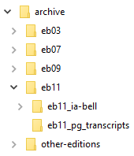

archive Repository
Long-term storage of image files
This repository stores original image files of print editions of the Encyclopedia Britannica. We never modify these files. Instead, we copy select images to the ebnn/_images folder for active use. The repository also includes scans of additional Britannica editions, as well as alternate scans of production editions.
At over 1TB, the archive repository is quite large and is stored on an external hard disk drive that is available at any time.
Once you have selected any images you need for current production, copy the files from archive to the ebnn/_images folder.

- eb03, eb07, eb09, eb11
- These are the print edition folders containing all image
files related to that edition. Each print edition folder
includes two subfolders.
- alternate
- If there are multiple image sources for the edition, they are stored here.
- ia-gri (name varies)
- We keep our source images for production in a folder named with the
online source that hosts it, using the following abbreviations.
bell Bell Reference cdl California Digital Library culc Cornell University Library Collection gb Google Books gri Getty Research Institute ht Hathi Trust ia Internet Archive nls National Library of Scotland pg Project Gutenberg uch University of Chicago uw University of Wisconsin 
- other-editions
- While we are only digitizing four editions, images from the remaining editions are stored here for future reference.